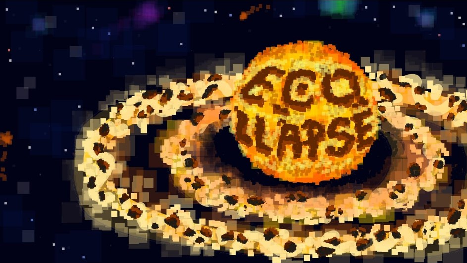

Ссылка на наш GitHub:
Аннотация проекта
ECOLLAPSE — симулятор выживания и эволюции, где игрок управляет уникальным существом, адаптирующимся к случайно сгенерированному миру с изменяющейся флорой, фауной и физическими законами. Задача игрока — выжить, эволюционировать и раскрыть тайны окружающей среды
Альтернативное задание
Процесс создания игры «Skyward Jumper»
"Skyward Jumper" — увлекательная 2D аркадная игра, в которой игрок берет на себя роль приключенца, стремящегося покорить воздушные высоты и собрать как можно больше монет. Игра состоит из пяти уровней, каждый из которых представляет собой уникальную локацию с нарастающей сложностью.
Геймплей:
- Сбор монет: После начала каждого уровня игрока ждёт захватывающее приключение по платформам, на которых разбросаны блестящие монеты. Чтобы перейти на следующий уровень, необходимо собрать все монеты на текущем уровне.
- Платформы и враги: Игрок должен быть внимательным и осторожным — если он коснётся врагов или падёт с платформы, ему придётся начать уровень заново. Каждый уровень требует от игрока ловкости, точности и интеллектуального подхода к движению.
- Увеличение сложности: Со временем уровень сложности нарастаёт — появляется больше летающих врагов. Игрок должен использовать свои навыки, чтобы преодолеть все трудности и достичь финала.
Особенности:
- Яркая графика: Игра включает в себя красочную и привлекательную графику, что делает процесс игры более захватывающим.
- Захватывающий геймплей: Увлекательные механики сбора монет и преодоления препятствий держат игрока в напряжении.
"Skyward Jumper" — это игра, которая бросает вызов игрокам, предлагая им проверить свои навыки в аккуратности и внимании. Откройте для себя мир приключений, прыгайте по платформам и собирайте желанные монеты, чтобы покорить небо!
Игра создавалась на Unity. Версия 6.0. Язык программирования: C#
Ссылка на скачивание игры:
Взаимодействие с партнёрами Пак Дианы
Экскурсия в офис Компании GeekSource - один из лидеров ИТ-аутсорсинга в России, а также специализируется на рекрутменте IT-специалистов в области разработки, big data и AI.
«На встрече я увидела интересную презентацию о компании, также нам провели экскурсию по офису, мастер-класс "Как составить резюме", мастер-класс "Как пройти собеседование". Было довольно познавательно и полезно».
Мастер-класс от Wildberries.
«Я приняла участие в мастер-классе от Wildberries, и это был довольно ценный опыт! Мы обсудили, как взаимодействовать с различными типами людей, а также проанализировали типологию DISC и мотивационные типы сотрудников по Герчикову. Особенно интересно было пройти тесты — это позволило мне узнать много нового о себе и окружающих».
Взаимодействие с партнёрами Комар Ярославы
«Я приняла участие в мастер-классе/лекции от представителей компании Wildberries. Нам рассказали о видах мотивации, о коллективной работе и взаимодействии в команде. Наиболее полезным мне показалось прохождение теста, для выявления своего типа мотивации - это дало мне возможность узнать многое о себе и других.».